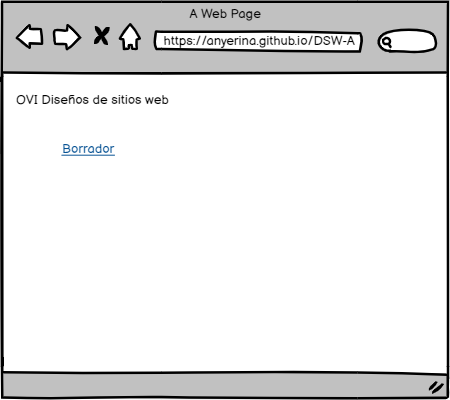

Contenido en HTML ( SECTION, ASIDE, FOOTER, ARTICLE)
Objetivo General
Desarrollar de forma correcta la maquetación de la página Index del sitio web del OVI.
Objetivos especificos
- Desarrollar de forma correcta la maquetación de la página Index del sitio web del OVI
- Definir elementos de contenido completamente acordes con las temáticas seleccionado para su diseño
- Presentar de forma gráfica todos los elementos que debe tener la página Index del OVI
Materiales
| Recurso |
Enlace |
| Bibiografìa |
https://developer.mozilla.org/es/docs/Learn/HTML/Introduccion_a_HTML/estructura |
| Video |
https://www.youtube.com/watch?v=DxumDNXRtpI |
| Imagenes |
https://www.anerbarrena.com/wp-content/uploads/2015/05/etiquetas-semanticas-html5.jpg |
Contenido
Las páginas web pueden y se deben diferenciar las unas de las otras, pero todas tienden a contener elementos comunes parecidos, a menos que estén destinadas a mostrar un vídeo o un juego a pantalla completa, o que formen parte de un proyecto artístico
concreto o, simplemente, que estén mal estructuradas; estos elementos comunes son:
- Encabezado:
- Normalmente formado por una gran franja que cruza la parte superior de la página con un gran título, un logotipo y quizás un lema. Esta parte suele permanecer invariable mientras navegas entre las páginas de un mismo sitio web.
- Barra de navegación:
- Son los enlaces a las secciones principales del sitio web. Normalmente está formada por un menú con botones, enlaces o pestañas. Al igual que el encabezado, este contenido suele permanecer invariable en las diferentes páginas del sitio;
tener un menú inconsistente en tu página web conducirá a los usuarios a la confusión y frustración. Muchos diseñadores web consideran que el menú de navegación forma parte del encabezado y que no posee un componente individual, aunque no es
necesario que sea así; de hecho, algunos argumentan que tener ambos componentes por separado es mejor por motivos de accesibilidad porque los lectores de pantalla pueden leer mejor ambos elementos si están separados.
- Contenido principal:
- Es la gran parte central de la página y contiene la mayor parte del contenido particular de una página web concreta; por ejemplo, el video que quieres ver, la narración que quieres leer, el mapa que quieres consultar, los titulares de las noticias,
etc. ¡Esta es la parte que definitivamente debe variar mucho de una página a otra de tu sitio web!
- Barra lateral:
- Suele incluir algún tipo de información adicional, enlaces, citas, publicidad, etc. Normalmente está relacionada con el contenido principal de la página (por ejemplo, en una página de noticias, la barra lateral podría contener la biografía del
autor o enlaces a artículos relacionados), pero en otras ocasiones encontraras elementos recurrentes como un menú de navegación secundario.
- Pie de página:
- Es la parte inferior de la página, que generalmente contiene la letra pequeña, el copyright o la información de contacto. Es el sitio donde se coloca la información común (al igual que en el encabezado), pero esta información no suele ser tan
importante o es secundaria con respecto a la página en sí misma. El pie también se suele usar para propósitos , e incluye enlaces de acceso rápido al contenido más popular.
HTML para dar estructura al contenido
El ejemplo no es muy atractivo, pero puede servir para ilustrar un ejemplo de diseño de una página web típica. Puedes encontrar sitios con más columnas, algunas mucho más complejas, pero esta servirá para hacerte una idea general sobre el tema. Con
el CSS adecuado podrás usar muchos más elementos para decorar las distintas secciones y conseguir que queden como deses, pero como se comentó anteriormente, necesitas respetar ciertas normas semánticas, y utilizar el elemento adecuado para cada tipo de sección.
La parte visual no lo es todo. Utilizarás diferentes fuentes y colores para llamar la atención de los usuarios sin discapacidad visual de las partes más importantes del contenido, como el menú de navegación y sus enlaces correspondientes, pero ¿qué
ocurre con los usuarios con discapacidad visual que no pueden distinguir los colores llamativos o el tamaño grande de las fuentes?
Nota: Los daltónicos representan alrededor del 4% de la población mundial (aproximadamente 1 de cada 12 hombres y 1 de cada 200 mujeres son daltónicos). Los invidentes y las personas con discapacidad visual representan aproximadamente
el 4-5% de la población mundial (en 2012 había rel="noopener" title="Discapacidad visual">Discapacidad visual 285 millones de personas con alguna de estas características en el mundo, mientras que el total de la población estaba .
En tu código HTML puedes crear secciones de contenido basadas en su funcionalidad — puedes usar elementos que representen sin ambigüedad las diferentes secciones de contenido descritas, de forma que las tecnologías de accesibilidad y los
lectores de pantalla puedan reconocer esos elementos y asistir en tareas como «encontrar el menú de navegación», o «encontrar el contenido principal». Como se mencionó anteriormente en el curso, hay una serie de
HTML dispone de etiquetas adecuadas que puedes usar para establecer estas secciones semánticas, por ejemplo:
- Encabezado <header>
- Contenido principal <main>
<,<Section>, y <div>.
- Barra lateral <aside> a menudo colocada dentro de <main>
- Pie de página <footer>
Maquetación
